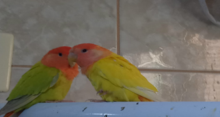
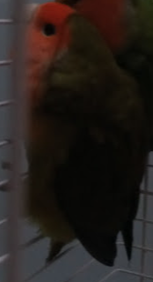

Temos por Lamarck que todos animais são suscetíveis a mudança, tais como as girafas entre outros, fazendo que ultrapassam a barreira da necessidade, e se forçam a mudar para sobreviver, assim como é possível reparar neste grupo de paraguaios. Podemos ver por essa foto que, os animais estão se adaptando para que sobrevivam.
Passando da cor amarela, vulgo cifosismo que faz com que o animal tenha uma grande redução da sua melanina, para sobreviver eles vão escurecendo sua coloração para enfrentar as incidências solares maiores. Temos então por fim, a versão final de um animal evoluído, que iremos chamar de Gabshow, onde a melanina presente no mesmo é a necessária para a boa sobrevivência.
